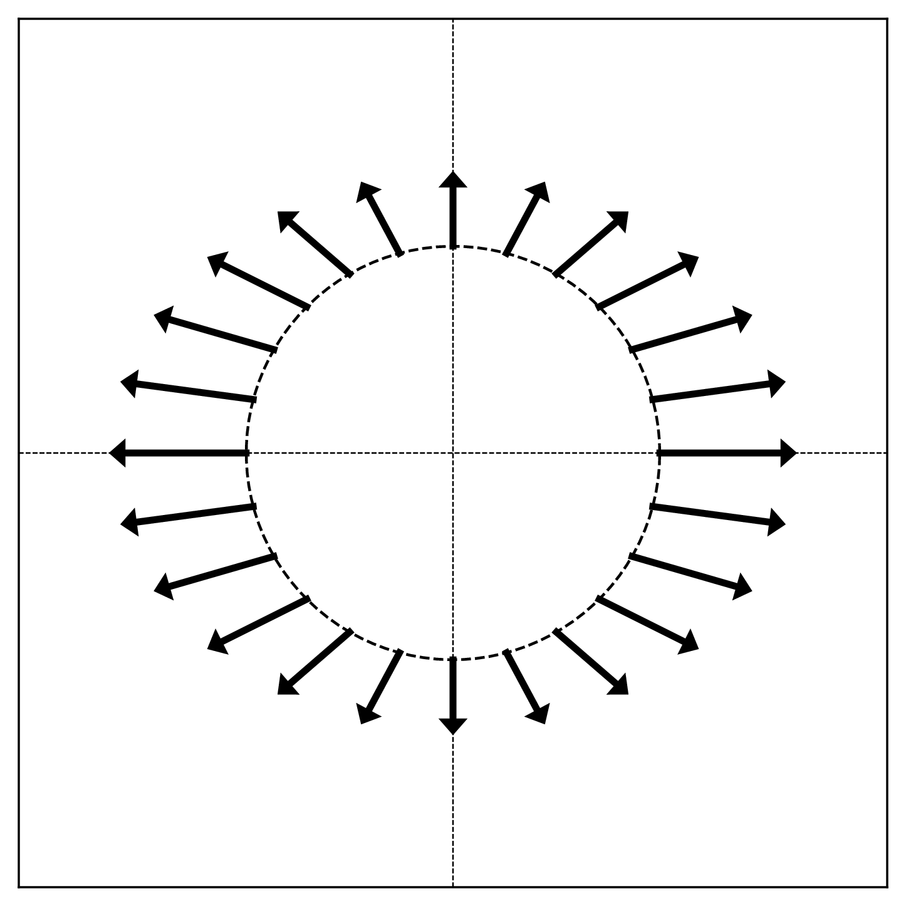

Problems tagged with "quiz-03"
Problem #28
Tags: linear algebra, quiz-03, eigenvalues, eigenvectors, lecture-04
Let \(A = \begin{pmatrix} 3 & 1 \\ 1 & 3 \end{pmatrix}\) and let \(\vec v = (1, 1)^T\).
True or False: \(\vec v\) is an eigenvector of \(A\). If true, what is the corresponding eigenvalue?
Solution
True, with eigenvalue \(\lambda = 4\).
We compute:
Since \(A \vec v = 4 \vec v\), the vector \(\vec v\) is an eigenvector with eigenvalue \(4\).
Problem #29
Tags: linear algebra, quiz-03, eigenvalues, eigenvectors, lecture-04
Let \(A = \begin{pmatrix} 2 & 1 \\ 1 & 2 \end{pmatrix}\) and let \(\vec v = (1, 2)^T\).
True or False: \(\vec v\) is an eigenvector of \(A\). If true, what is the corresponding eigenvalue?
Solution
False.
We compute:
For \(\vec v\) to be an eigenvector, we would need \(A \vec v = \lambda\vec v\) for some scalar \(\lambda\). This would require:
From the first component, we would need \(\lambda = 4\). From the second component, we would need \(\lambda = \frac{5}{2}\). Since these two values are not equal, there is no such \(\lambda\) that satisfies both equations. Therefore, \(\vec v\) is not an eigenvector of \(A\).
Problem #30
Tags: linear algebra, quiz-03, eigenvalues, eigenvectors, lecture-04
Let \(A = \begin{pmatrix} 1 & 1 & 3 \\ 1 & 2 & 1 \\ 3 & 1 & 9 \end{pmatrix}\) and let \(\vec v = (1, 4, -1)^T\).
True or False: \(\vec v\) is an eigenvector of \(A\). If true, what is the corresponding eigenvalue?
Solution
True, with eigenvalue \(\lambda = 2\).
We compute:
Since \(A \vec v = 2 \vec v\), the vector \(\vec v\) is an eigenvector with eigenvalue \(2\).
Problem #31
Tags: linear algebra, quiz-03, eigenvalues, eigenvectors, lecture-04
Let \(A = \begin{pmatrix} 5 & 1 & 1 & 1 \\ 1 & 5 & 1 & 1 \\ 1 & 1 & 5 & 1 \\ 1 & 1 & 1 & 5 \end{pmatrix}\) and let \(\vec v = (1, 2, -2, -1)^T\).
True or False: \(\vec v\) is an eigenvector of \(A\). If true, what is the corresponding eigenvalue?
Solution
True, with eigenvalue \(\lambda = 4\).
We compute:
Since \(A \vec v = 4 \vec v\), the vector \(\vec v\) is an eigenvector with eigenvalue \(4\).
Problem #32
Tags: linear algebra, quiz-03, eigenvalues, eigenvectors, lecture-04
Let \(A = \begin{pmatrix} 1 & 6 \\ 6 & 6 \end{pmatrix}\) and let \(\vec v = (3, -2)^T\).
True or False: \(\vec v\) is an eigenvector of \(A\). If true, what is the corresponding eigenvalue?
Solution
True, with eigenvalue \(\lambda = -3\).
We compute:
Since \(A \vec v = -3 \vec v\), the vector \(\vec v\) is an eigenvector with eigenvalue \(-3\).
Problem #33
Tags: linear algebra, quiz-03, eigenvalues, eigenvectors, lecture-04
Let \(\vec v\) be a unit vector in \(\mathbb R^d\), and let \(I\) be the \(d \times d\) identity matrix. Consider the matrix \(P\) defined as:
True or False: \(\vec v\) is an eigenvector of \(P\).
Solution
True.
To verify this, we compute \(P \vec v\):
Since \(P \vec v = -\vec v = (-1) \vec v\), we see that \(\vec v\) is an eigenvector of \(P\) with eigenvalue \(-1\).
Note: The matrix \(P = I - 2 \vec v \vec v^T\) is called a Householder reflection matrix, which reflects vectors across the hyperplane orthogonal to \(\vec v\).
Problem #34
Tags: linear algebra, quiz-03, eigenvalues, eigenvectors, lecture-04
Let \(A\) be the matrix:
It can be verified that the vector \(\vec{u}^{(1)} = (2, 1)^T\) is an eigenvector of \(A\).
Part 1)
What is the eigenvalue associated with \(\vec{u}^{(1)}\)?
Solution
The eigenvalue is \(\lambda_1 = 6\).
To find the eigenvalue, we compute \(A \vec{u}^{(1)}\):
Therefore, \(\lambda_1 = 6\).
Part 2)
Find another eigenvector \(\vec{u}^{(2)}\) of \(A\). Your eigenvector should have an eigenvalue that is different from \(\vec{u}^{(1)}\)'s eigenvalue. It does not need to be normalized.
Solution
\(\vec{u}^{(2)} = (1, -2)^T\)(or any scalar multiple).
Since \(A\) is symmetric, we know that we can always find two orthogonal eigenvectors. This suggests that we should find a vector orthogonal to \(\vec{u}^{(1)} = (2, 1)^T\) and make sure that it is indeed an eigenvector.
We know from the math review in Week 01 that the vector \((1, -2)^T\) is orthogonal to \((2, 1)^T\)(in general, \((a, b)^T\) is orthogonal to \((-b, a)^T\)).
We can verify:
So the eigenvalue is \(\lambda_2 = 1\), which is indeed different from \(\lambda_1 = 6\).
Problem #35
Tags: linear algebra, quiz-03, eigenvalues, eigenvectors, lecture-04
Let \(D\) be the diagonal matrix:
Part 1)
What is the top eigenvalue of \(D\)? What eigenvector corresponds to this eigenvalue?
Solution
The top eigenvalue is \(7\).
For a diagonal matrix, the eigenvalues are exactly the diagonal entries. The diagonal entries are \(2, -5, 7\), and the largest is \(7\).
An eigenvector corresponding to this eigenvalue is \(\vec v = (0, 0, 1)^T\).
Part 2)
What is the bottom (smallest) eigenvalue of \(D\)? What eigenvector corresponds to this eigenvalue?
Solution
The bottom eigenvalue is \(-5\).
An eigenvector corresponding to this eigenvalue is \(\vec w = (0, 1, 0)^T\).
Problem #36
Tags: linear algebra, quiz-03, eigenvalues, eigenvectors, lecture-04, linear transformations
Consider the linear transformation \(\vec f : \mathbb{R}^2 \to\mathbb{R}^2\) that reflects vectors over the line \(y = -x\).
Find two orthogonal eigenvectors of this transformation and their corresponding eigenvalues.
Solution
The eigenvectors are \((1, -1)^T\) with \(\lambda = 1\), and \((1, 1)^T\) with \(\lambda = -1\).
Geometrically, vectors along the line \(y = -x\)(i.e., multiples of \((1, -1)^T\)) are unchanged by reflection over that line, so they have eigenvalue \(1\). Vectors perpendicular to the line \(y = -x\)(i.e., multiples of \((1, 1)^T\)) are flipped to point in the opposite direction, so they have eigenvalue \(-1\).
Problem #37
Tags: linear algebra, quiz-03, eigenvalues, eigenvectors, lecture-04, linear transformations
Consider the linear transformation \(\vec f : \mathbb{R}^2 \to\mathbb{R}^2\) that scales vectors along the line \(y = x\) by a factor of 2, and scales vectors along the line \(y = -x\) by a factor of 3.
Find two orthogonal eigenvectors of this transformation and their corresponding eigenvalues.
Solution
The eigenvectors are \((1, 1)^T\) with \(\lambda = 2\), and \((1, -1)^T\) with \(\lambda = 3\).
Geometrically, vectors along the line \(y = x\)(i.e., multiples of \((1, 1)^T\)) are scaled by a factor of 2, so they have eigenvalue \(2\). Vectors along the line \(y = -x\)(i.e., multiples of \((1, -1)^T\)) are scaled by a factor of 3, so they have eigenvalue \(3\).
Problem #38
Tags: linear algebra, quiz-03, eigenvalues, eigenvectors, lecture-04, linear transformations
Consider the linear transformation \(\vec f : \mathbb{R}^2 \to\mathbb{R}^2\) that rotates vectors by \(180°\).
Find two orthogonal eigenvectors of this transformation and their corresponding eigenvalues.
Solution
Any pair of orthogonal vectors works, such as \((1, 0)^T\) and \((0, 1)^T\). Both have eigenvalue \(\lambda = -1\).
Geometrically, rotating any vector by \(180°\) reverses its direction, so \(\vec f(\vec v) = -\vec v\) for all \(\vec v\). This means every nonzero vector is an eigenvector with eigenvalue \(-1\).
Since we need two orthogonal eigenvectors, any orthogonal pair will do.
Problem #39
Tags: linear algebra, quiz-03, eigenvalues, eigenvectors, lecture-04
Consider the diagonal matrix:
How many unit length eigenvectors does \(A\) have?
Solution
\(\infty\) The upper-left \(2 \times 2\) block of \(A\) is the identity matrix. Recall from lecture that the identity matrix has infinitely many eigenvectors: every nonzero vector is an eigenvector of the identity with eigenvalue 1.
Similarly, any vector of the form \((a, b, 0)^T\) where \(a\) and \(b\) are not both zero satisfies:
So any such vector is an eigenvector with eigenvalue 1. There are infinitely many unit vectors of this form (they form a circle in the \(x\)-\(y\) plane), so \(A\) has infinitely many unit length eigenvectors.
Additionally, \((0, 0, 1)^T\) is an eigenvector with eigenvalue 5.
Problem #40
Tags: linear algebra, quiz-03, spectral theorem, eigenvectors, lecture-04
Consider the matrix:
True or False: The spectral theorem guarantees that \(A\) has 2 orthogonal eigenvectors.
Solution
False.
The spectral theorem only applies to symmetric matrices. The matrix \(A\) is not symmetric because \(A^T \neq A\):
Since \(A\) is not symmetric, the spectral theorem does not apply, and we cannot use it to conclude anything about \(A\)'s eigenvectors.
Problem #41
Tags: linear algebra, quiz-03, spectral theorem, eigenvectors, lecture-04
Suppose \(A\) is a symmetric matrix, and \(\vec{u}^{(1)}\) and \(\vec{u}^{(2)}\) are both eigenvectors of \(A\).
True or False: \(\vec{u}^{(1)}\) and \(\vec{u}^{(2)}\) must be orthogonal.
Solution
False.
Consider the identity matrix \(I\). Every nonzero vector is an eigenvector of \(I\) with eigenvalue 1. For example, both \((1, 0)^T\) and \((1, 1)^T\) are eigenvectors of \(I\), but they are not orthogonal:
The spectral theorem says that you can find\(n\) orthogonal eigenvectors for an \(n \times n\) symmetric matrix, but it does not say that every pair of eigenvectors is orthogonal.
Aside: It can be shown that if \(\vec{u}^{(1)}\) and \(\vec{u}^{(2)}\) have different eigenvalues, then they must be orthogonal.
Problem #42
Tags: linear algebra, quiz-03, spectral theorem, eigenvectors, diagonalization, lecture-04
Suppose \(A\) is a \(d \times d\) symmetric matrix.
True or False: There exists an orthonormal basis in which \(A\) is diagonal.
Solution
True.
By the spectral theorem, every \(d \times d\) symmetric matrix has \(d\) mutually orthogonal eigenvectors. If we normalize these eigenvectors, they form an orthonormal basis.
In this eigenbasis, the matrix \(A\) is diagonal: the diagonal entries are the eigenvalues of \(A\).
Problem #43
Tags: linear algebra, quiz-03, symmetric matrices, eigenvectors, lecture-04, linear transformations
The figure below shows a linear transformation \(\vec{f}\) applied to points on the unit circle. Each arrow shows the direction and relative magnitude of \(\vec{f}(\vec{x})\) for a point \(\vec{x}\) on the circle.
True or False: The linear transformation \(\vec{f}\) is symmetric.
Solution
False.
Recall from lecture that symmetric linear transformations have orthogonal axes of symmetry. In the visualization, this would appear as two perpendicular directions where the arrows point directly outward (or inward) from the circle.
In this figure, there are no such orthogonal axes of symmetry. The pattern of arrows does not exhibit the characteristic symmetry of a symmetric transformation.
Problem #44
Tags: linear algebra, quiz-03, diagonal matrices, eigenvectors, lecture-04, linear transformations
The figure below shows a linear transformation \(\vec{f}\) applied to points on the unit circle. Each arrow shows the direction and relative magnitude of \(\vec{f}(\vec{x})\) for a point \(\vec{x}\) on the circle.

True or False: The matrix representing \(\vec{f}\) with respect to the standard basis is diagonal.
Solution
True.
A matrix is diagonal if and only if the standard basis vectors are eigenvectors. In the visualization, eigenvectors correspond to directions where the arrows point radially (directly outward or inward).
Looking at the figure, the arrows at \((1, 0)\) and \((-1, 0)\) point horizontally, and the arrows at \((0, 1)\) and \((0, -1)\) point vertically. This means the standard basis vectors \(\hat e^{(1)} = (1, 0)^T\) and \(\hat e^{(2)} = (0, 1)^T\) are eigenvectors.
Since the standard basis vectors are eigenvectors, the matrix is diagonal in the standard basis.
Problem #45
Tags: linear algebra, eigenbasis, quiz-03, eigenvalues, eigenvectors, lecture-04
Let \(\vec{u}^{(1)}, \vec{u}^{(2)}, \vec{u}^{(3)}\) be three unit length orthonormal eigenvectors of a linear transformation \(\vec{f}\), with eigenvalues \(8\), \(4\), and \(-3\) respectively.
Suppose a vector \(\vec{x}\) can be written as:
What is \(\vec{f}(\vec{x})\), expressed in coordinates with respect to the eigenbasis \(\{\vec{u}^{(1)}, \vec{u}^{(2)}, \vec{u}^{(3)}\}\)?
Solution
\([\vec{f}(\vec{x})]_{\mathcal{U}} = (16, -12, -3)^T\) Using linearity and the eigenvector property:
Since \(\vec{u}^{(1)}\) is an eigenvector with eigenvalue \(8\), we have \(\vec{f}(\vec{u}^{(1)}) = 8\vec{u}^{(1)}\). Similarly, \(\vec{f}(\vec{u}^{(2)}) = 4\vec{u}^{(2)}\) and \(\vec{f}(\vec{u}^{(3)}) = -3\vec{u}^{(3)}\):
In the eigenbasis, this is simply \((16, -12, -3)^T\).
Problem #46
Tags: linear algebra, eigenbasis, quiz-03, eigenvalues, eigenvectors, lecture-04
Let \(\vec{u}^{(1)}, \vec{u}^{(2)}, \vec{u}^{(3)}\) be three unit length orthonormal eigenvectors of a linear transformation \(\vec{f}\), with eigenvalues \(5\), \(-2\), and \(3\) respectively.
Suppose a vector \(\vec{x}\) can be written as:
What is \(\vec{f}(\vec{x})\), expressed in coordinates with respect to the eigenbasis \(\{\vec{u}^{(1)}, \vec{u}^{(2)}, \vec{u}^{(3)}\}\)?
Solution
\([\vec{f}(\vec{x})]_{\mathcal{U}} = (20, -2, -6)^T\) Using linearity and the eigenvector property:
Since \(\vec{u}^{(1)}\) is an eigenvector with eigenvalue \(5\), we have \(\vec{f}(\vec{u}^{(1)}) = 5\vec{u}^{(1)}\). Similarly, \(\vec{f}(\vec{u}^{(2)}) = -2\vec{u}^{(2)}\) and \(\vec{f}(\vec{u}^{(3)}) = 3\vec{u}^{(3)}\):
In the eigenbasis, this is simply \((20, -2, -6)^T\).
Problem #47
Tags: optimization, linear algebra, quiz-03, eigenvalues, eigenvectors, lecture-04
Let \(A\) be a symmetric matrix with eigenvalues \(6\) and \(-9\).
True or False: The maximum value of \(\|A\vec{x}\|\) over all unit vectors \(\vec{x}\) is \(6\).
Solution
False. The maximum is \(9\).
The maximum of \(\|A\vec{x}\|\) over unit vectors is achieved when \(\vec{x}\) is an eigenvector corresponding to the eigenvalue with the largest absolute value.
Here, \(|-9| = 9 > 6 = |6|\), so the maximum is achieved at the eigenvector with eigenvalue \(-9\).
If \(\vec{u}\) is a unit eigenvector with eigenvalue \(-9\), then:
Problem #48
Tags: optimization, linear algebra, quiz-03, eigenvalues, eigenvectors, quadratic forms, lecture-04
Let \(A\) be a \(3 \times 3\) symmetric matrix with the following eigenvectors and corresponding eigenvalues: \(\vec{u}^{(1)} = \frac{1}{3}(1, 2, 2)^T\) has eigenvalue \(4\), \(\vec{u}^{(2)} = \frac{1}{3}(2, 1, -2)^T\) has eigenvalue \(1\), and \(\vec{u}^{(3)} = \frac{1}{3}(2, -2, 1)^T\) has eigenvalue \(-10\).
Consider the quadratic form \(\vec{x}\cdot A\vec{x}\).
Part 1)
What unit vector \(\vec{x}\) maximizes \(\vec{x}\cdot A\vec{x}\)?
Solution
\(\vec{u}^{(1)} = \frac{1}{3}(1, 2, 2)^T\) The quadratic form \(\vec{x}\cdot A\vec{x}\) is maximized by the eigenvector with the largest eigenvalue. Among \(4\), \(1\), and \(-10\), the largest is \(4\), so the maximizer is \(\vec{u}^{(1)}\).
Part 2)
What is the maximum value of \(\vec{x}\cdot A\vec{x}\) over all unit vectors?
Solution
\(4\) The maximum value equals the largest eigenvalue. We can verify:
Part 3)
What unit vector \(\vec{x}\) minimizes \(\vec{x}\cdot A\vec{x}\)?
Solution
\(\vec{u}^{(3)} = \frac{1}{3}(2, -2, 1)^T\) The quadratic form is minimized by the eigenvector with the smallest eigenvalue. Among \(4\), \(1\), and \(-10\), the smallest is \(-10\), so the minimizer is \(\vec{u}^{(3)}\).
Part 4)
What is the minimum value of \(\vec{x}\cdot A\vec{x}\) over all unit vectors?
Solution
\(-10\) The minimum value equals the smallest eigenvalue. We can verify:
Problem #49
Tags: linear algebra, quiz-03, eigenvalues, eigenvectors, lecture-04
Let \(A\) be a symmetric matrix with top eigenvalue \(\lambda\). Let \(B = A + 5I\), where \(I\) is the identity matrix.
True or False: The top eigenvalue of \(B\) must be \(\lambda + 5\).
Solution
True.
The main thing to realize is that \(A\) and \(B\) have the same eigenvectors. If \(\vec v\) is an eigenvector of \(A\) with eigenvalue \(\lambda\), then:
Thus, \(\vec v\) is also an eigenvector of \(B\) with eigenvalue \(\lambda + 5\).
This means that the eigenvalues of \(B\) are simply the eigenvalues of \(A\) shifted by 5. Therefore, if \(\lambda\) is the top eigenvalue of \(A\), then \(\lambda + 5\) is the top eigenvalue of \(B\).
Problem #50
Tags: orthogonal matrices, linear algebra, quiz-03, change of basis, lecture-05
Let \(\hat{u}^{(1)}\) and \(\hat{u}^{(2)}\) be an orthonormal basis for \(\mathbb R^2\):
Part 1)
What is the change of basis matrix \(U\)?
Solution
The change of basis matrix \(U\) has the new basis vectors as its rows:
This matrix represents a 45-degree rotation.
Part 2)
Let \(\vec x = (2, 0)^T\) be a vector in the standard basis. What are the coordinates of \(\vec x\) in the basis \(\mathcal{U}\)?
Solution
We compute \([\vec x]_{\mathcal{U}} = U \vec x\):
Problem #51
Tags: orthogonal matrices, linear algebra, quiz-03, change of basis, lecture-05
Let \(\hat{u}^{(1)}\), \(\hat{u}^{(2)}\), and \(\hat{u}^{(3)}\) be an orthonormal basis for \(\mathbb R^3\):
Part 1)
What is the change of basis matrix \(U\)?
Solution
The change of basis matrix \(U\) has the new basis vectors as its rows:
This matrix represents a 30-degree rotation in the \(xy\)-plane while leaving the \(z\)-axis unchanged.
Part 2)
Let \(\vec x = (\sqrt 3, 1, 2)^T\) be a vector in the standard basis. What are the coordinates of \(\vec x\) in the basis \(\mathcal{U}\)?
Solution
We compute \([\vec x]_{\mathcal{U}} = U \vec x\):
Problem #52
Tags: orthogonal matrices, linear algebra, quiz-03, change of basis, lecture-05
Let \(\hat{u}^{(1)}\), \(\hat{u}^{(2)}\), \(\hat{u}^{(3)}\), and \(\hat{u}^{(4)}\) be an orthonormal basis for \(\mathbb R^4\):
Part 1)
What is the change of basis matrix \(U\)?
Solution
The change of basis matrix \(U\) has the new basis vectors as its rows:
Part 2)
Let \(\vec x = (2, 3, 1, 4)^T\) be a vector in the standard basis. What are the coordinates of \(\vec x\) in the basis \(\mathcal{U}\)?
Solution
We compute \([\vec x]_{\mathcal{U}} = U \vec x\):
Problem #53
Tags: linear algebra, quiz-03, lecture-05, eigenvalues, eigenvectors, diagonalization
Let \(\vec f\) be a linear transformation with eigenvectors and eigenvalues:
What is \(\vec f(\vec x)\) for \(\vec x = (3, 1)^T\)?
Solution
\(\vec f(\vec x) = (3, 5)^T\).
We'll take the three step approach of 1) finding the coordinates of \(\vec x\) in the eigenbasis, 2) applying the transformation in that basis (where the matrix of the transformation \(A_\mathcal{U}\) is diagonal and consists of the eigenvalues), and 3) converting back to the standard basis.
We saw in lecture that we can do this all in one go using the change of basis matrix \(U\):
where \(U\) is the change of basis matrix with the eigenvectors as rows and \(A_\mathcal{U}\) is the diagonal matrix with the eigenvalues on the diagonal. In this case, they are:
Then:
Problem #54
Tags: linear algebra, quiz-03, lecture-05, eigenvalues, eigenvectors, diagonalization
Let \(\vec f\) be a linear transformation with eigenvectors and eigenvalues:
What is \(\vec f(\vec x)\) for \(\vec x = (1, 1, 2)^T\)?
Solution
\(\vec f(\vec x) = (3, 3, 2)^T\).
We'll take the three step approach of 1) finding the coordinates of \(\vec x\) in the eigenbasis, 2) applying the transformation in that basis (where the matrix of the transformation \(A_\mathcal{U}\) is diagonal and consists of the eigenvalues), and 3) converting back to the standard basis.
We saw in lecture that we can do this all in one go using the change of basis matrix \(U\):
where \(U\) is the change of basis matrix with the eigenvectors as rows and \(A_\mathcal{U}\) is the diagonal matrix with the eigenvalues on the diagonal. In this case, they are:
Then:
Problem #55
Tags: linear algebra, quiz-03, lecture-05, eigenvalues, eigenvectors, diagonalization
Let \(\vec f\) be a linear transformation with eigenvectors and eigenvalues:
What is \(\vec f(\vec x)\) for \(\vec x = (4, 0, 0, 0)^T\)?
Solution
\(\vec f(\vec x) = (7, 5, 3, 1)^T\).
We'll take the three step approach of 1) finding the coordinates of \(\vec x\) in the eigenbasis, 2) applying the transformation in that basis (where the matrix of the transformation \(A_\mathcal{U}\) is diagonal and consists of the eigenvalues), and 3) converting back to the standard basis.
We saw in lecture that we can do this all in one go using the change of basis matrix \(U\):
where \(U\) is the change of basis matrix with the eigenvectors as rows and \(A_\mathcal{U}\) is the diagonal matrix with the eigenvalues on the diagonal. In this case, they are:
Then:
Problem #56
Tags: linear algebra, quiz-03, symmetric matrices, spectral theorem, eigenvalues, eigenvectors, lecture-05
Find a symmetric \(2 \times 2\) matrix \(A\) whose eigenvectors are \(\hat{u}^{(1)} = \frac{1}{\sqrt{5}}(1, 2)^T\) with eigenvalue \(6\) and \(\hat{u}^{(2)} = \frac{1}{\sqrt{5}}(2, -1)^T\) with eigenvalue \(1\).
Solution
\(A = \begin{pmatrix} 2 & 2 \\ 2 & 5 \end{pmatrix}\).
We saw in lecture that a symmetric matrix \(A\) can be written as \(A = U^T \Lambda U\), where \(U\) is the matrix whose rows are the eigenvectors of \(A\) and \(\Lambda\) is the diagonal matrix of eigenvalues.
This means that if we know the eigenvectors and eigenvalues of a symmetric matrix, we can "work backwards" to find the matrix itself.
In this case:
Therefore:
Problem #57
Tags: linear algebra, quiz-03, symmetric matrices, spectral theorem, eigenvalues, eigenvectors, lecture-05
Find a symmetric \(3 \times 3\) matrix \(A\) whose eigenvectors are \(\hat{u}^{(1)} = \frac{1}{3}(1, 2, 2)^T\) with eigenvalue \(9\), \(\hat{u}^{(2)} = \frac{1}{3}(2, 1, -2)^T\) with eigenvalue \(18\), and \(\hat{u}^{(3)} = \frac{1}{3}(2, -2, 1)^T\) with eigenvalue \(-9\).
Solution
\(A = \begin{pmatrix} 5 & 10 & -8 \\ 10 & 2 & 2 \\ -8 & 2 & 11 \end{pmatrix}\).
We saw in lecture that a symmetric matrix \(A\) can be written as \(A = U^T \Lambda U\), where \(U\) is the matrix whose rows are the eigenvectors of \(A\) and \(\Lambda\) is the diagonal matrix of eigenvalues.
In this case:
Therefore: